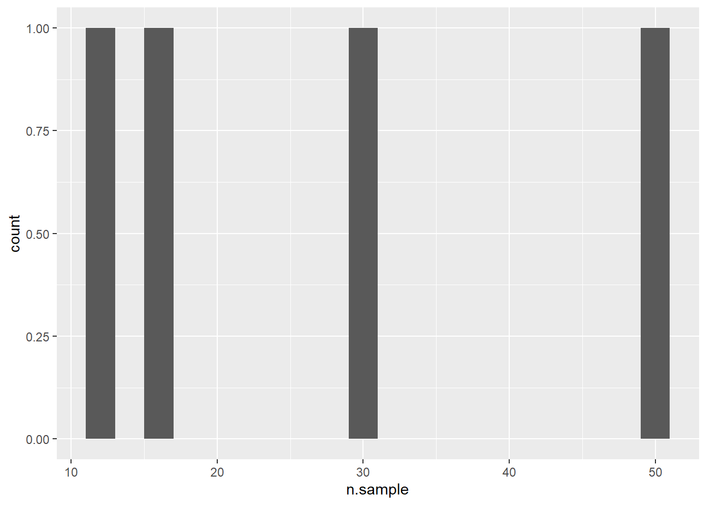
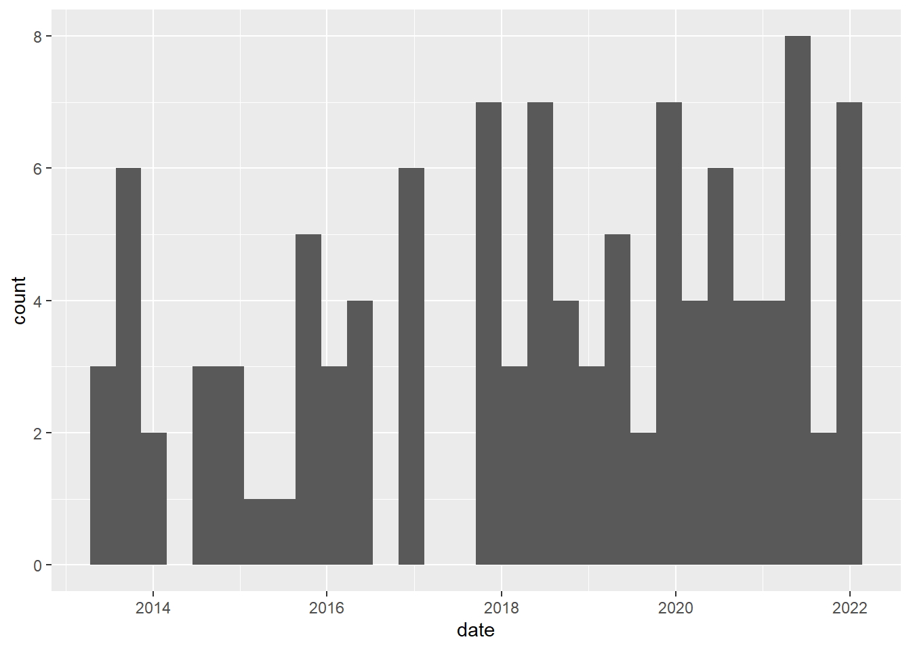
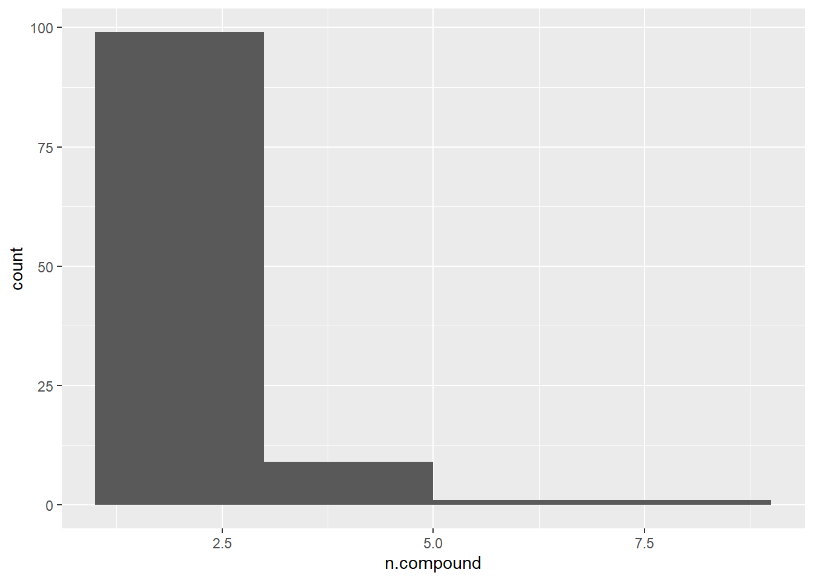
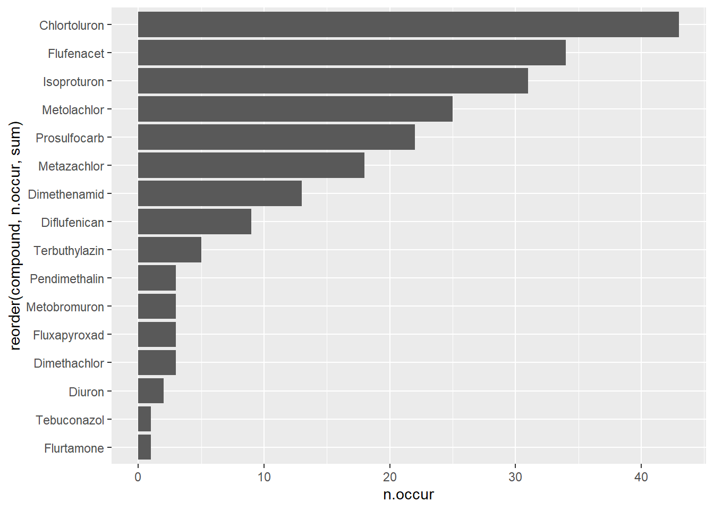

explore saarland pesticide data
How many samples?
[1] 110How many sites?
[1] 4How many samples per site?

When does sampling occur?
`stat_bin()` using `bins = 30`. Pick better value with `binwidth`.
How many compounds per sample?

How many different compounds?
[1] 16How often does each compound occur?

compound n.occur
1: Chlortoluron 43
2: Flufenacet 34
3: Isoproturon 31
4: Metolachlor 25
5: Prosulfocarb 22
6: Metazachlor 18
7: Dimethenamid 13
8: Diflufenican 9
9: Terbuthylazin 5
10: Fluxapyroxad 3
11: Dimethachlor 3
12: Pendimethalin 3
13: Metobromuron 3
14: Diuron 2
15: Flurtamone 1
16: Tebuconazol 1Map of samples
Run information
R version 4.2.2 (2022-10-31 ucrt)
Platform: x86_64-w64-mingw32/x64 (64-bit)
Running under: Windows 10 x64 (build 22000)
Matrix products: default
locale:
[1] LC_COLLATE=German_Germany.utf8 LC_CTYPE=German_Germany.utf8
[3] LC_MONETARY=German_Germany.utf8 LC_NUMERIC=C
[5] LC_TIME=German_Germany.utf8
attached base packages:
[1] stats graphics grDevices utils datasets methods base
other attached packages:
[1] stringr_1.4.1 tidyr_1.2.1 fs_1.5.2 shiny_1.7.3
[5] conflicted_1.1.0 knitr_1.41 ggplot2_3.4.0 mapview_2.11.0
[9] sf_1.0-9 rstudioapi_0.14 lubridate_1.9.0 timechange_0.1.1
[13] magrittr_2.0.3 dplyr_1.0.10 data.table_1.14.6 readxl_1.4.1
loaded via a namespace (and not attached):
[1] jsonlite_1.8.3 assertthat_0.2.1 sp_1.5-1
[4] stats4_4.2.2 cellranger_1.1.0 yaml_2.3.6
[7] pillar_1.8.1 lattice_0.20-45 glue_1.6.2
[10] uuid_1.1-0 digest_0.6.30 promises_1.2.0.1
[13] leaflet.providers_1.9.0 colorspace_2.0-3 htmltools_0.5.3
[16] httpuv_1.6.6 pkgconfig_2.0.3 raster_3.6-3
[19] purrr_0.3.5 xtable_1.8-4 scales_1.2.1
[22] webshot_0.5.4 svglite_2.1.0 brew_1.0-8
[25] terra_1.6-41 satellite_1.0.4 later_1.3.0
[28] tibble_3.1.8 proxy_0.4-27 generics_0.1.3
[31] farver_2.1.1 ellipsis_0.3.2 cachem_1.0.6
[34] withr_2.5.0 cli_3.4.1 mime_0.12
[37] memoise_2.0.1 evaluate_0.18 fansi_1.0.3
[40] class_7.3-20 tools_4.2.2 lifecycle_1.0.3
[43] munsell_0.5.0 compiler_4.2.2 e1071_1.7-12
[46] systemfonts_1.0.4 rlang_1.0.6 classInt_0.4-8
[49] units_0.8-0 grid_4.2.2 leafpop_0.1.0
[52] htmlwidgets_1.5.4 crosstalk_1.2.0 leafem_0.2.0
[55] base64enc_0.1-3 labeling_0.4.2 rmarkdown_2.18
[58] gtable_0.3.1 codetools_0.2-18 DBI_1.1.3
[61] R6_2.5.1 fastmap_1.1.0 utf8_1.2.2
[64] KernSmooth_2.23-20 stringi_1.7.8 Rcpp_1.0.9
[67] vctrs_0.5.1 png_0.1-7 leaflet_2.1.1
[70] tidyselect_1.2.0 xfun_0.35